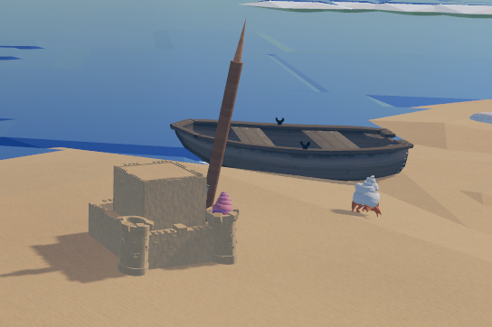
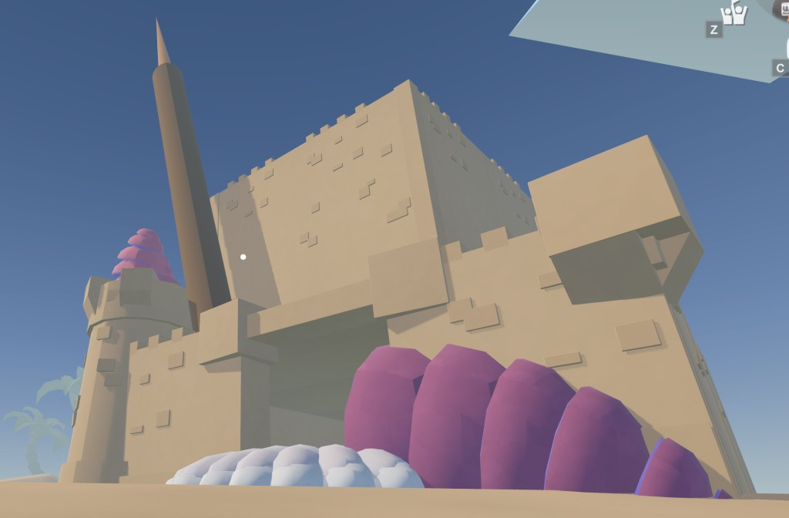
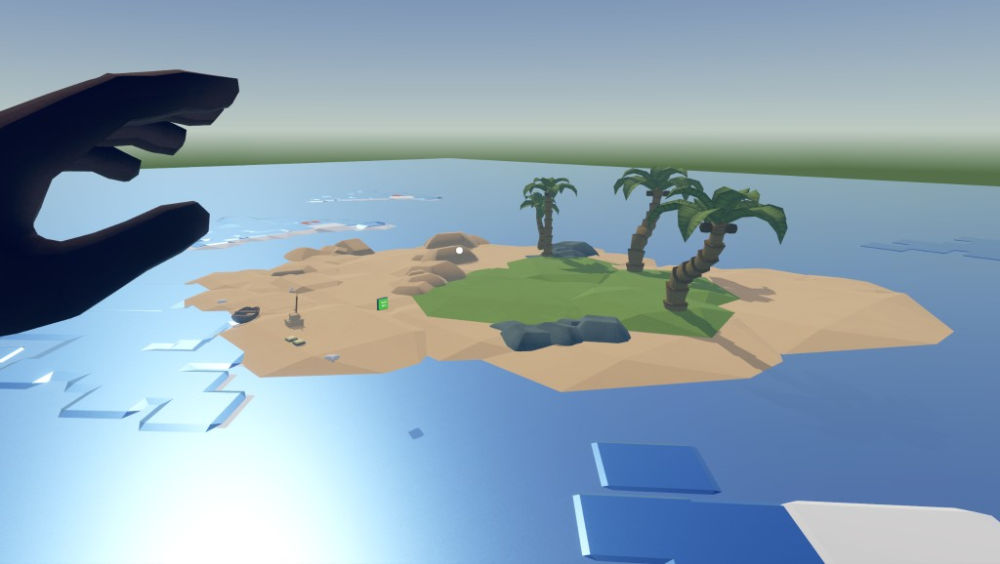
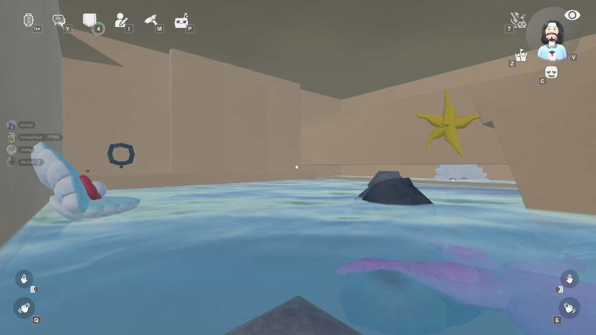
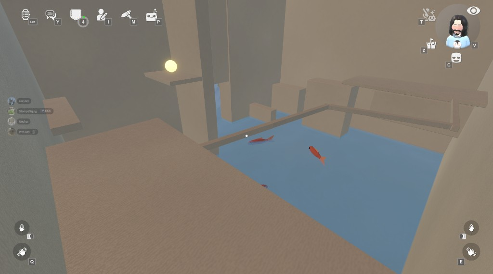
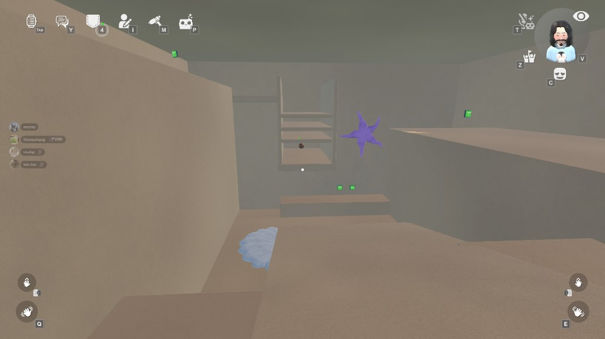
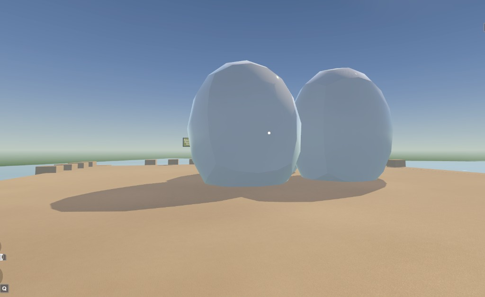

T H E - S T R A N D E D
S A N D C A S T L E

The Stranded Sandcastle is a VR puzzle-adventure experience built in Rec Room that explores the theme of scale and perspective. Players find themselves stranded on an isolated island after their boat breaks down. After building a sandcastle to protect turtle eggs, they are shrunk down by crabs who see them as a threat. The player must navigate through the now-giant sandcastle, solving three puzzles to retrieve colored pearls and restore their original size.
The experience uses VR's unique ability to immerse players directly into an environment, transforming familiar beach objects—sandcastles, crabs, seashells—into massive, threatening structures. The project combines physics-based interactions, dexterity challenges, and observational logic to create a cohesive puzzle-adventure that demonstrates how changing scale can completely reshape how players experience and interact with their environment.
Built using Rec Room's circuit-based system rather than traditional code, the project emphasizes collaborative real-time development and rapid iteration. The sandcastle serves as a multi-level fortress with a flooded basement, main floor, second floor, and rooftop, each presenting unique challenges that test different VR mechanics.



Figure 03. Island Overview - Scale perspective showing player's shrunken sizeI served as the Game Flow Designer and Circuit Implementation Lead for this project. I was responsible for designing the complete gameplay flow and implementing three puzzle rooms using Rec Room's circuit system.
Game Flow Design: I designed the overall progression structure, ensuring that each puzzle room built upon the previous one while introducing new mechanics. The flow guides players from the flooded basement through platforming challenges to the final logic puzzle, creating a cohesive journey that maintains engagement while gradually increasing complexity.
Puzzle 1 - Basement (Accuracy & Physics): I designed and implemented the basketball-throwing room in the flooded basement. Players must physically throw objects into target baskets on the far wall, testing hand-eye coordination and VR physics accuracy. I built the circuit system using Rec Room's "Trigger Volumes" to detect when objects enter target areas. When all targets are hit, the circuit sends a signal to a gizmo that physically slides a stone wall open, revealing the White Pearl. This puzzle establishes the core interaction loop and introduces players to the physicality of VR interactions.

Figure 04. Puzzle 1 - Basement room with aquatic elements and throwing targetsTransition System - Pearl-Based Door Mechanics: I implemented the pearl collection and door unlocking system that connects all three puzzle rooms. Each pearl acts as a key that unlocks progression to the next area. I designed the circuit logic that detects when a pearl is placed on the designated clam shell, triggering door mechanisms that grant access to subsequent rooms. This system creates a clear sense of progression and ensures players understand how their actions directly impact the environment.
Puzzle 2 - Dexterity Room (Umbrella Scaling): I designed and built the second puzzle room, which requires players to navigate a series of platforms while managing an obstacle. The core mechanic I implemented is the umbrella scaling system—players must find a control that can shrink or enlarge the umbrella blocking their path. This mechanic demonstrates that while players are small, they still have agency over their environment through the magic left by the crab. The circuit system I built controls the umbrella's size transformation, allowing players to manipulate scale as a gameplay tool rather than just experiencing it passively.

Figure 05. Puzzle 2 - Dexterity room with platforms and water elementsPuzzle 3 - Logic Room (Button Sequence): I designed and implemented the final puzzle on the upper level, which shifts focus from physical skill to mental observation. I built a button sequence system where players must find hidden buttons around the room and press them in a specific order. The circuit logic I created tracks button presses, validates the sequence, and deactivates walls when the correct order is input, granting access to the Bronze Pearl. This puzzle requires players to observe their environment carefully and remember spatial relationships, creating a satisfying conclusion that tests a different skill set than the previous challenges.

Figure 06. Puzzle 3 - Logic room with button sequence mechanics
Figure 07. Sandcastle Structure - Multi-level fortress designThroughout development, I focused on creating intuitive circuit logic that felt responsive and reliable. Working within Rec Room's visual circuit system required translating gameplay intentions into signal flows, trigger conditions, and gizmo activations—a process that demanded both creative problem-solving and systematic debugging to ensure all interactions worked consistently across playtests.
This project demonstrated how visual circuit-based development can enable rapid iteration and collaborative design in VR. Working with Rec Room's circuit system rather than traditional code allowed me to quickly prototype puzzle mechanics, test interactions, and refine the gameplay flow through immediate visual feedback. The ability to see signal flows and trigger conditions in real-time made debugging more intuitive and accelerated the design process.
Designing three distinct puzzle rooms that each test different VR mechanics taught me the importance of mechanical variety within a cohesive flow. Each puzzle—physics-based throwing, dexterity-based platforming with scale manipulation, and observation-based logic—required different circuit implementations, but they all needed to feel like part of the same experience. Balancing mechanical diversity with narrative coherence was a key challenge that strengthened my ability to design interconnected systems.
Working within Rec Room's constraints—particularly around physics, collisions, and motion sickness—taught me to prioritize player comfort and reliable interactions over ambitious but unstable mechanics. The iterative testing process revealed that simple, well-executed interactions often create better experiences than complex systems that break under edge cases. This project strengthened my ability to design within platform limitations while still creating engaging, memorable gameplay experiences.